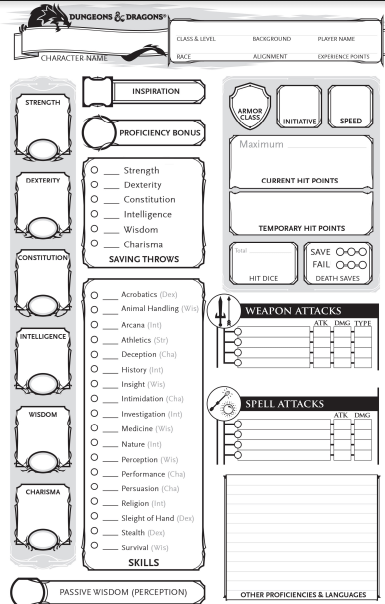

What am I passionate about? Dungeons and Dragons!
What IT Innovation would I like to see? Accessibility!
My family comes from the construction industry where accessibility is becoming the biggest market in houses, from simple accessibility options to fully accessible houses designed specifically for specific disabilities. By incorporating that into future IT projects the inclusiveness of communities and groups that form from such projects will be vast and diverse.
While I currently do not have a disability, a large portion of the older group of my family do, so I would like to work on projects/jobs in the future that accommodate and design for accessibility. Starting on small projects that build up accessibility will be a boon in future years.
The project: An accesible Dungeons and Dragons Fifth Edition Character Sheet Maker
Overview of the project
The project I would like to work on would be to design and code a program for Dungeons and Dragons players, used to use to make character reference sheets which are used through the game. My goal would be to design it in a way it is as accessible as possible to as many people as possible. Ideally, I would like this project to be connected to all online table top gaming services and usable for public offline games as well.
Using Aurora Builder as a reference for a program (Bas Driessen, 2021), as well as WOTC’s DND Beyond (Wizards of the Coast, 2021), using the Web Accessbility Initiative guidelines as a base and building on accessibility features from there.Motivation!
While I currently do not have a disability, a large portion of the older group of my family do, so I would like to work on projects/jobs in the future that accommodate and design for accessibility. Starting on small projects that build up accessibility will be a boon in future years. DND is opening up in accessibility to players of all variants, but there are still some boundaries that could be opened. While Wizards of the Coast, the company with the rights to the Table Top Role-Playing Game, has made recent efforts of inclusivity, there is not enough accessibility in those offered by the company. After using popular character creators called Aurora Builder, DND Beyond, I often find barriers to using these programs, from financial reasons to navigability. I would love to expand on the accessibility of an already inclusive genre of gaming and use the wonderful power of IT to grant that to people worldwide.
Description of what the project entails
The character sheet Maker
The program itself would be designed to gather all the information of a character that a player of Dungeons and Dragons would like to make, and to pool that information together, present a character reference sheet. DND is a simple game, but can be a bit hard to teach. Ideally, to open up new players, the project can include images, videos and other explanations that are not just chunks of text. Howeve, this content is limited by the System Reference Document (SRD) that Wizard of the Coast has published, which states that any non-official programs cannot use any content outside of the SRD unless licensed by WOTC. (Wizards of the Coast, 2016) That said there are many other programs out there that do not do this via loophoples, but I would like to be safe on the legal side.
The accessiblity options
There are a large amount of accessibility options needed in all aspects of lie, especially tabletop gaming (Jennifer Kretchmer, n.d). Starting off, the most necessary options are the ones outlined in the Web Accessibility Initiative (W3, 2021), which outlines basic accessibility features that all online programs should have.(Eggert & Abou-Zahra, 2019). For this project specifically, as it also involves the physical act of playing Dungeons and Dragons, be it online or in person, other accessibility features would be necessary. The picture above, for example, is a character sheet made for people who are dyslexic, while other similar disabilities might require colour, or more emphasis on images. In the same vein, text to speech and image reader options would also need to be available. This would be on top of proper contrast for low visibility readers, proper word spacing and more.
Outside of the web guidelines, other disabilities to consider include cognitive and communication. The project would be inclined to include ways for people to communicate to this would may have trouble with it, from displaying and clarifying sign language for the hearing impaired, to simplifying explanations for the cognitively impaired. Helping new players understand what to ask, such as an image or a line of text (for example, ‘say “my character would swing their longsword”’ when attacking) which can help people explain their vision for their character.
To assist with physical disabilites, connection with online table top services, such as the website Roll20, would be implemented to allow for those whose abilities do not allow for regular travel or discomfort from the social side of being with groups of people.
The tools and technologies needed!
Ideally, the project would aim to be a program similar to Aurora Builder, as it can be used offline and doesn’t require an internet connection. However, if not feasible, a website would work as it would be accessible on mobile and computer devices. To do so, the best way to work on such would be using Github as the repository for the needed code, and then text editors like Visual Studio Code so the code can be written. Following that, a way to read and translate files automatically for display on the website or program would also be needed.
The skills required
Following on from the previous paragraph, to use, design and create this idea would take different skills. IF the project is a website, using HTML and CSS would be the primary base. Building on from there would need Javascript or other coding languages in the same vein. Learning how to use repositories like GitHub would also be helpful, as it would allow data to be stored in an easy-to-reach place. XML and JSON files are most common when it comes to Character Sheet builders online, so learning how to use, open and change those would also be a skill.
The outcome!
A combination of multiple accessibility resources and an easy to use program as a result of this project would greatly assist in welcoming, helping and retaining players to this wonderful tabletop game. Games like Dungeons and Dragons are known to build friendship and communication skills and as such as increased usage may result in an increase of positive work values that can be translated from group work to University or career prospects. Giving this access to those that may not normally have it benefits all as those without disabilities can learn how to work with those who do.